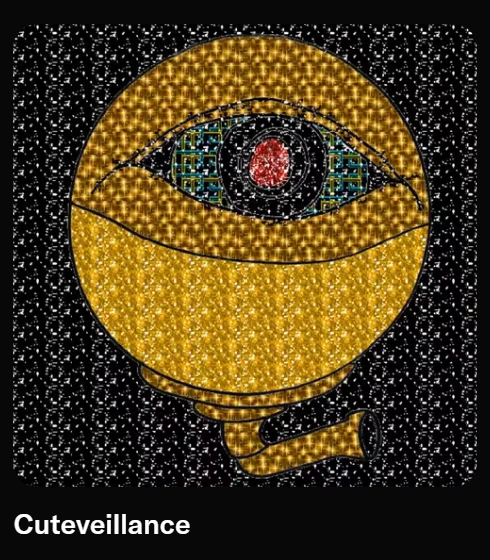
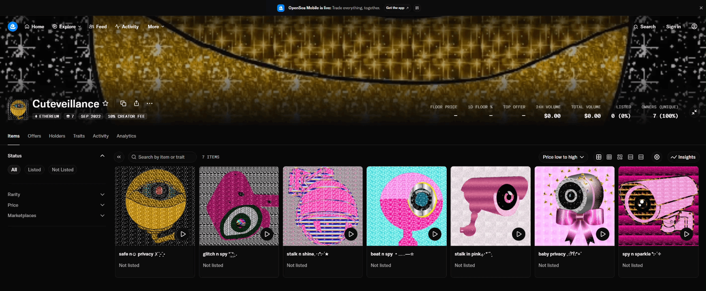

← NOTES.exe / Cuteveillance Origin.txt
Cuteveillance Origin
Fabiola Larios · October 2026 · Cuteveillance / NFTs / AI / Digital Culture

Cuteveillance began in September 2022, through my experiments with NFTs, artificial intelligence, and digital glitter. Its early history is recorded on Ethereum: the transaction records document a mint on September 27, 2022, under the collection name Cuteveillance and the token symbol CUTE. Four years later, those beginnings give me a way to trace how a series of digital artworks developed into a visual language that now shapes my installations, sculptures, and artistic identity.
Works such as baby privacy, stalk in pink, and spy n sparkle brought surveillance cameras into a world of pink surfaces, digital glitter that comes from the early internet era: GIFs, decorated images, glitter phrases, or customized profiles in MySpace. Their names also carried humor and some symbols that cannot be read on regular files on a computer (lol).
These works exist as NFTs on Ethereum, with their token ownership and transfers recorded on the blockchain. That history matters to me because it anchors Cuteveillance in a specific moment of my practice during the NFT boom.
